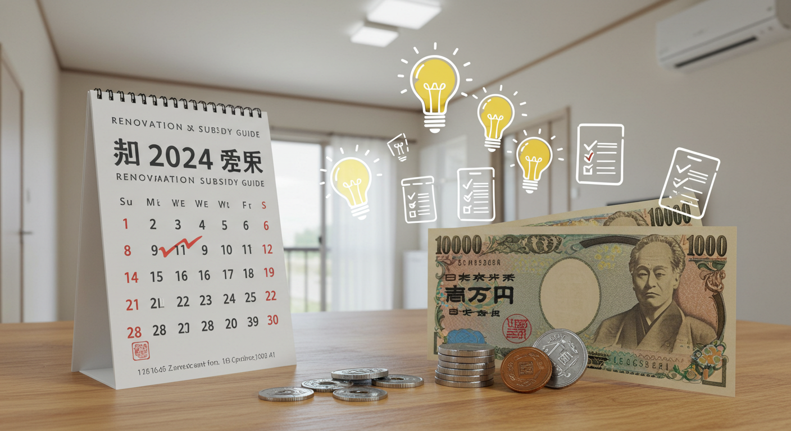

2024年最新！リフォーム補助金を活用し費用を抑える賢い選び方と申請ガイド

導入
「そろそろ、この古くなったキッチンを新しくしたいな」「冬の寒さや夏の暑さが厳しいから、断熱性能を上げたい」「親の介護に備えて、家の中をバリアフリーにできないだろうか」
暮らしの中で、住まいに関する願いや悩みは尽きないものですね。家族の成長やライフスタイルの変化に合わせて、より快適で安全な住環境を整えたいと考えるのは、とても自然なことです。しかし、理想の住まいを実現するためのリフォームには、どうしても大きな費用がかかるという現実が立ちはだかります。見積もりを見て、思わずため息をついてしまった経験がある方もいらっしゃるかもしれません。
もし、そのリフォーム費用の一部を国や自治体が支援してくれるとしたら、どうでしょうか。諦めかけていたワンランク上の設備を導入できたり、予定していなかった別の箇所の改修も検討できたりするかもしれません。その夢のような話を現実にするのが、今回ご紹介する「リフォーム補助金」制度です。
リフォーム補助金は、国や地方自治体が、省エネ性能の向上、耐震性の強化、バリアフリー化といった、社会全体にとっても有益な住宅改修を促進するために設けている支援制度です。上手に活用すれば、リフォームにかかる経済的な負担を大幅に軽減できる、まさに「知っている人だけが得をする」制度と言えるでしょう。
しかし、「補助金って、なんだか手続きが難しそう」「自分は対象になるのかな？」「どんな種類があるのか、情報が多すぎて分からない」といった不安や疑問を感じる方も少なくないはずです。
ご安心ください。この記事では、2024年の最新情報に基づき、リフォーム補助金に関するあらゆる疑問を解消し、あなたが最適な制度を見つけて賢く活用するためのお手伝いをします。補助金を活用するメリット・デメリットから、具体的な制度の種類、自分に合った補助金の選び方、そして申請から受領までの具体的な流れまで、一つひとつ丁寧に、分かりやすく解説していきます。
この記事を読み終える頃には、リフォーム補助金がぐっと身近なものに感じられ、理想の住まいづくりに向けた具体的な第一歩を踏み出す自信が湧いてくるはずです。さあ、一緒に賢いリフォーム計画を立てていきましょう。
リフォーム補助金活用のメリット
リフォームを考える際に、補助金の活用を検討することは、もはや必須と言っても過言ではありません。なぜなら、そこには費用面だけでなく、暮らしの質や将来にわたる安心感など、計り知れないほどの多くのメリットが隠されているからです。ここでは、リフォーム補助金を活用することで得られる３つの大きなメリットについて、詳しく見ていきましょう。
メリット１．費用負担を大幅に軽減できる
リフォーム補助金を活用する最大のメリットは、何と言っても「費用負担を大幅に軽減できる」という点です。これは、リフォームに踏み切る際の最も大きなハードルである経済的な問題を直接的に解決してくれる、非常に大きな魅力と言えるでしょう。
例えば、総額300万円のリフォームを計画しているとします。もし、補助金がなければ、この300万円はすべて自己資金やローンで賄わなければなりません。しかし、補助金制度を活用することで、数十万円、場合によっては100万円以上の支援を受けられる可能性があります。仮に50万円の補助金が受けられれば、実質的な負担は250万円にまで減少します。この差は決して小さくありません。
この軽減された50万円という金額は、家計にとって大きなゆとりを生み出します。そのゆとりを、どのように活かすことができるでしょうか。
一つは、リフォームのグレードアップに充てるという選択です。当初の予算では諦めざるを得なかった、ワンランク上のシステムキッチンやユニットバス、機能性の高い建材などを選ぶことができるようになります。例えば、キッチンであれば、お手入れが簡単な最新のレンジフードや、収納力の高いカップボードを追加できるかもしれません。浴室であれば、肩湯機能や調光機能付きの照明など、日々の疲れを癒すための設備を充実させることも夢ではありません。このように、補助金は「妥協のリフォーム」を「満足のリフォーム」へと昇華させてくれる力を持っているのです。
また、別の箇所の追加リフォームに充てるという考え方もあります。「今回はキッチンのリフォームだけ」と考えていたけれど、浮いた予算で「気になっていた洗面台も一緒に新しくしよう」とか、「リビングの壁紙も張り替えよう」といったように、リフォームの範囲を広げることができます。一度に工事をまとめて行うことで、工事期間の短縮や、別々に工事を行うよりも総費用を抑えられるといった副次的なメリットも期待できます。
もちろん、単純に貯蓄に回したり、他の必要な出費に充てたりすることで、家計全体の負担を軽くすることも賢明な選択です. リフォーム後の生活にも余裕が生まれ、精神的な安心感にもつながるでしょう。
このように、補助金は単に費用が安くなるというだけでなく、リフォームの選択肢を広げ、より豊かで満足度の高い住まいづくりを可能にしてくれる、強力なサポーターなのです。この大きなメリットを最大限に活かすためにも、まずはどのような補助金があるのかを知ることから始めてみましょう。
メリット２．住まいの快適性・安全性が向上する
リフォーム補助金の多くは、国や自治体が推進したい特定の目的を持って設計されています。その主な目的とは、「省エネルギー化」「バリアフリー化」「耐震性の向上」など、国民全体の暮らしの質を高め、安全を確保することにあります。つまり、補助金の対象となるリフォーム工事を行うことは、単に費用的なメリットを享受するだけでなく、結果的に住まいの「快適性」と「安全性」を飛躍的に向上させることにつながるのです。
１．省エネリフォームによる快適性の向上
近年の補助金制度で特に力が入れられているのが、住宅の省エネ性能を高めるリフォームです。例えば、「先進的窓リノベ2024事業」のように、断熱性能の高い窓への交換を支援する制度や、「子育てエコホーム支援事業」における壁や床、天井の断熱改修などがこれにあたります。
断熱リフォームを行うと、住まいは「夏は涼しく、冬は暖かい」魔法瓶のような空間に生まれ変わります。外の厳しい暑さや寒さの影響を受けにくくなるため、冷暖房の使用を最小限に抑えることができます。これは、月々の光熱費を削減するという直接的な経済的メリットはもちろんのこと、私たちの暮らしに大きな快適性をもたらします。
冬の朝、暖房が効き始めるまでの凍えるような寒さや、足元からじんわりと伝わる底冷えが緩和されます。夏の夜、エアコンをつけっぱなしにしなくても、快適な室温で眠りにつけるようになるかもしれません。また、部屋ごとの温度差が少なくなることで、冬場に多発する「ヒートショック」のリスクを大幅に低減できます。ヒートショックは、暖かいリビングから寒い脱衣所や浴室へ移動した際の急激な血圧変動が原因で起こり、心筋梗塞や脳卒中につながる大変危険な現象です。特に高齢のご家族がいらっしゃるご家庭では、断熱リフォームは命を守るための重要な投資と言えるでしょう。
２．バリアフリーリフォームによる安全性の向上
年齢を重ねるとともに、若い頃は何でもなかったわずかな段差が大きな障壁になったり、浴室での立ち座りが負担になったりすることがあります。「介護保険における住宅改修費の支給」や、自治体独自の高齢者向けリフォーム補助金などを活用すれば、将来を見据えたバリアフリーリフォームを少ない負担で実現できます。
具体的には、廊下や階段への手すりの設置、室内の段差解消、滑りにくい床材への変更、和式トイレから洋式トイレへの交換といった工事が対象となります。これらの改修は、高齢者や身体が不自由な方の転倒事故を防ぎ、自立した生活を長く続けるための大きな助けとなります。
また、バリアフリーリフォームは、高齢者だけのものではありません。小さなお子様がいるご家庭では、段差でつまずく危険を減らせますし、妊娠中の方や怪我をした際にも、手すりがあることで移動が格段に楽になります。つまり、バリアフリー化は、あらゆる世代の家族が、今も将来も安心して暮らせるユニバーサルデザインの住まいを実現することにつながるのです。
３．耐震リフォームによる絶対的な安心感
地震大国である日本において、住まいの耐震性は命に直結する最重要課題です。特に、旧耐震基準（1981年5月31日以前）で建てられた住宅にお住まいの方は、大きな地震に対する備えが不可欠です。多くの地方自治体では、こうした住宅を対象に、耐震診断や耐震改修工事に対する補助金制度を設けています。
耐震リフォームでは、壁に筋交いを入れたり、構造用合板を張ったりして強度を高めたり、基礎を補強したり、屋根を軽い素材に葺き替えたりといった工事が行われます。これにより、万が一大きな地震が発生した際に、建物の倒壊を防ぎ、家族の命と財産を守ることができます。
補助金を活用することで、費用負担を抑えながら、この「絶対的な安心感」を手に入れることができるのです。日々の暮らしの中で、「もし今、大きな地震が来たら…」という不安を抱えながら過ごすのと、しっかりと対策を施した家で安心して過ごすのとでは、心の平穏が全く違います。
このように、補助金はリフォーム費用を助けてくれるだけでなく、私たちの暮らしをより豊かで、より安全なものへと導いてくれる道しるべのような存在なのです。
メリット３．住宅の資産価値を高める効果も
リフォームを考えるとき、多くの方は現在の暮らしをより良くすることに焦点を当てがちですが、補助金を活用したリフォームは、実は将来を見据えた賢い「投資」という側面も持っています。それは、補助金の対象となる性能向上リフォームが、住宅そのものの「資産価値」を高める効果を期待できるからです。
住宅の資産価値は、立地や築年数、間取りといった要素だけで決まるわけではありません。近年、特に重要視されるようになっているのが、「住宅性能」です。省エネ性能、耐震性能、耐久性といった目に見えにくい部分の性能が、住宅の評価を大きく左右する時代になってきています。
１．省エネ性能がもたらす付加価値
補助金を活用して高断熱の窓に交換したり、壁や屋根に断熱材を追加したりする省エネリフォームは、その住宅の付加価値を大きく高めます。なぜなら、エネルギー価格が高騰し続ける現代において、「光熱費を抑えられる家」は、住宅市場において非常に大きなアピールポイントになるからです。
将来、その家を売却することになった場合を想像してみてください。同じような築年数、間取りの物件が二つ並んでいたとします。一つは昔のままの住宅、もう一つは省エネリフォームが施され、「夏は涼しく冬は暖かく、月々の光熱費も安く済みます」とアピールできる住宅。買い手はどちらに魅力を感じるでしょうか。答えは明白ですね。
また、住宅の省エネ性能を客観的に評価・表示する「BELS（ベルス）」といった制度もあります。省エネリフォームを行うことで、このBELSの評価が向上し、いわば「燃費の良い家」であることのお墨付きを得ることができます。これは、売却や賃貸に出す際の強力なセールスポイントとなり、査定価格の上昇や、より早い買い手・借り手の発見につながる可能性を秘めています。
２．耐震性能がもたらす信頼価値
耐震リフォームもまた、住宅の資産価値を維持・向上させる上で極めて重要です。特に旧耐震基準の住宅は、耐震性が確保されていないというだけで、市場価値が著しく低く評価されてしまう傾向にあります。買い手から見れば、いつ来るか分からない大地震のリスクを抱えたまま、高額な住宅ローンを組むことには大きな抵抗があるからです。
自治体の補助金などを活用して、現行の耐震基準に適合するよう改修工事を行えば、その住宅は「安全性が確認された家」として、買い手に大きな安心感を与えることができます。耐震基準適合証明書などを取得できれば、それは客観的な信頼の証となり、売却の際に不利になるどころか、むしろ適正な価格での取引が期待できるようになります。耐震性の確保は、もはや資産価値を維持するための最低条件と言っても良いでしょう。
３．長期的な視点でのメリット
補助金を活用したリフォームは、単に工事費の一部が戻ってくるという短期的なメリットだけではありません。光熱費の削減という形で継続的に家計を助け、将来の売却時にはより有利な条件を引き出すことができる、長期的な経済効果をもたらす賢い選択なのです。現在の快適な暮らしと、将来の資産形成の両方を実現できる。これこそが、補助金活用リフォームが持つ、見過ごされがちな、しかし非常に大きなメリットと言えるでしょう。
リフォーム補助金のデメリットと注意点
ここまでリフォーム補助金の素晴らしいメリットについてお話ししてきましたが、物事には必ず表と裏があるものです。補助金制度も例外ではなく、その恩恵を受けるためには、いくつかのハードルや注意すべき点が存在します。事前にこれらのデメリットをしっかりと理解しておくことで、後になって「こんなはずじゃなかった」と後悔することを防ぎ、よりスムーズに制度を活用することができます。ここでは、知っておくべき３つのデメリットと注意点について解説します。
デメリット１．申請手続きが複雑で手間がかかる場合がある
リフォーム補助金の活用を考えたときに、多くの人が最初に感じるであろうハードルが「申請手続きの煩雑さ」です。公的な制度である以上、税金が原資となっているため、その使い道が適正であるかを証明するための厳格な手続きが求められるのは、ある意味で当然のことと言えます。
具体的に、どのような手間がかかるのでしょうか。まず、申請には数多くの書類を準備する必要があります。一般的には、以下のような書類が求められます。
- 申請書： 制度ごとに定められた様式に、申請者情報や工事内容などを記入します。
- 工事請負契約書の写し： どのような工事を、いくらで、どの業者と契約したかを示す書類です。
- 工事箇所の図面： リフォームを行う場所が分かる平面図などです。
- 工事前の写真： 工事によってどのように変わるのかを証明するために必要です。日付が入っていることが求められる場合もあります。
- 本人確認書類： 運転免許証やマイナンバーカードの写しなど。
- 住宅の登記事項証明書： 住宅の所有者などを証明する書類です。
- 製品の性能証明書： 補助金の対象となる特定の建材や設備（高断熱窓や高効率給湯器など）を使用する場合、その製品が基準を満たしていることを証明するメーカー発行の書類です。
これらはあくまで一例であり、利用する補助金制度や自治体によって必要書類は異なります。これらの書類を一つひとつ不備なく揃えるのは、慣れていない方にとってはかなりの時間と労力を要する作業です。特に、複数の制度を併用しようとすると、それぞれに異なる書類を用意しなければならず、混乱してしまうこともあるでしょう。
さらに、書類を提出するタイミングも重要です。多くの補助金では「工事着工前」の申請が必須とされており、このタイミングを逃すと、たとえ対象となる工事を行っても補助金は受け取れません。また、工事完了後には「実績報告書」の提出が求められ、ここでも工事後の写真や費用の支払いを証明する領収書の写しなど、追加の書類が必要となります。
このように、申請から受領までにはいくつかのステップがあり、それぞれに期限が設けられています。日々の仕事や家事で忙しい中で、これらの手続きをすべて自分一人で管理するのは、正直なところ、かなり大変な作業と言わざるを得ません。
ただし、過度に心配する必要はありません。
この複雑な手続きをサポートしてくれる心強い味方がいます。それが、リフォーム施工業者です。補助金申請の実績が豊富な業者の多くは、これらの手続きに精通しており、書類作成のサポートや、場合によっては申請手続きそのものを代行してくれます。多くの国の補助金制度では、事業者が申請を行う「代理申請」が一般的になっています。
したがって、このデメリットを克服する最大のポイントは、「補助金申請に慣れた、信頼できるリフォーム業者を見つけること」に尽きます。業者選びの段階で、「補助金の申請サポートはしていただけますか？」と明確に確認することが非常に重要です。良いパートナーを見つけることができれば、この手続きの煩雑さというデメリットは、大幅に軽減されるでしょう。
デメリット２．申請期間や対象条件に制限がある
リフォーム補助金は、「いつでも、誰でも、どんなリフォームでも」利用できるわけではない、という点が二つ目の注意点です。それぞれの制度には、利用するための「期間」と「条件」が厳格に定められており、これを満たさなければ補助金を受け取ることはできません。
１．申請期間の制限
補助金制度には、必ず申請を受け付ける期間が設定されています。例えば、「2024年4月1日から2024年12月31日まで」といった具体的な期間が公表されます。この期間内に申請手続きを完了させなければ、当然ながら対象外となってしまいます。
しかし、ここでさらに注意が必要なのは、「予算上限」という存在です。多くの補助金制度は、国や自治体があらかじめ確保した予算の範囲内で運営されています。そのため、申請期間の終了を待たずに、申請額が予算の上限に達した時点で、その年度の受付が早期に終了してしまうことが頻繁に起こります。特に、補助額が大きく人気のある制度ほど、その傾向は顕著です。
これは、言わば「早い者勝ち」の競争のようなものです。「まだ期間があるから大丈夫」とのんびり構えていると、いざ申請しようとしたときには「申し訳ありません、本年度の受付は終了しました」という事態になりかねません。昨年度も、人気の補助金は秋口には予算上限に達してしまいました。リフォームを計画しているのであれば、できるだけ早い段階で情報収集を開始し、補助金の申請状況を常にチェックしながら、迅速に行動を起こすことが成功の鍵となります。
２．対象条件の制限
補助金を利用するには、様々な条件をクリアする必要があります。これらの条件は、大きく分けて「人（申請者）に関する条件」「住宅に関する条件」「工事に関する条件」の３つに分類できます。
- 人（申請者）に関する条件：
- その住宅の所有者であること。
- その住宅に居住していること。
- 税金を滞納していないこと。
- 特定の世帯属性であること（例：「子育てエコホーム支援事業」における子育て世帯・若者夫婦世帯など）。
- 住宅に関する条件：
- 建築基準法に違反していないこと。
- 特定の築年数であること（例：旧耐震基準の住宅を対象とする耐震補助金など）。
- 床面積が一定以上であること。
- 工事に関する条件：
- 補助金の対象として定められた工事内容であること（例えば、単なるデザイン性のためのリフォームは対象外となることが多い）。
- 使用する建材や設備が、制度の定める性能基準を満たしていること（例：特定の断熱性能を持つ窓、省エネ基準を満たした給湯器など）。
- 補助金の申請額が、定められた最低金額以上であること（例：「子育てエコホーム支援事業」では補助額合計が5万円以上になる工事が対象）。
- 登録された事業者（リフォーム業者）が施工すること。
これらの条件は、利用したい補助金制度の公式ホームページや手引きに詳細に記載されています。自分の状況や計画しているリフォームが、これらの条件をすべて満たしているかを、申請前に一つひとつ丁寧に確認する作業が不可欠です。もし不明な点があれば、自治体の担当窓口やリフォーム業者に相談し、確実に解消しておくようにしましょう。これらの制限を正しく理解し、計画を立てることが、補助金活用の第一歩となります。
デメリット３．工事内容や予算に制約が生じる可能性
リフォーム補助金は、費用負担を軽減してくれる大変ありがたい制度ですが、その一方で、リフォーム計画そのものに一定の「制約」をもたらす可能性があることも理解しておく必要があります。補助金を受け取ることを最優先に考えると、本来やりたかったリフォームの自由度が少し失われてしまうかもしれない、というデメリットです。
１．補助対象となる工事への限定
補助金は、国や自治体が推進したい政策目的（省エネ、バリアフリー、耐震など）に合致したリフォームに対して交付されます。そのため、補助金の対象となる工事内容は、あらかじめ細かく定められています。
例えば、あなたが「海外の雑誌で見たような、おしゃれなデザインのタイルをキッチンに使いたい」と考えていたとします。しかし、そのタイルが補助金の対象となる「清掃性の高い内装材」の基準を満たしていなければ、その部分の工事は補助の対象外となります。同様に、「最新の機能よりも、温かみのある木製のドアにしたい」と思っても、そのドアが制度の定める断熱性能の基準をクリアしていなければ、補助金は受けられません。
このように、補助金を利用するためには、制度の「ものさし」に合わせた建材や設備を選ぶ必要があります。その結果、デザインや素材の選択肢が限られてしまい、100%自分の好みを反映させることが難しくなるケースも考えられます。補助金という実利を取るか、デザインというこだわりを優先するか、という選択を迫られる場面が出てくるかもしれません。
２．最低工事金額や補助額の条件
多くの補助金制度では、「補助額の合計が〇万円以上になる工事」といった下限設定がされています。例えば、「子育てエコホーム支援事業」では、補助額の合計が5万円以上になるリフォームが対象です。
これは、「トイレの交換だけ」といった比較的小規模な工事の場合、それ単体では補助額が5万円に満たず、補助金の対象にならない可能性があることを意味します。補助金を受けるために、本来は予定していなかった「ついで工事」（例えば、洗面台の交換や内窓の設置など）を追加して、無理に補助額の合計を5万円以上に調整する必要が出てくるかもしれません。
これは、結果的に当初の予算を超えてしまうことにもつながりかねません。「補助金をもらうために、余計な出費をしてしまった」となれば、本末転倒です。リフォームの目的と予算を明確にし、補助金に振り回されるのではなく、あくまで補助金を賢く「利用する」というスタンスを保つことが重要です。
３．工事スケジュールの制約
補助金申請の手続きには、一定の時間がかかります。申請書類を提出してから、審査を経て「交付決定通知」が届くまで、数週間から1ヶ月以上かかることも珍しくありません。そして、多くの補助金制度では、この「交付決定通知」を受け取る前に工事を開始すること（事前着工）を固く禁じています。
もし、あなたが「子供の夏休み中にリフォームを終わらせたい」といった具体的な希望のスケジュールを持っていたとしても、交付決定が遅れれば、それに合わせて工事の開始時期も後ろ倒しにせざるを得ません。
このように、補助金を利用する際には、通常のスケジュールに加えて、申請・審査期間という不確定な要素を考慮に入れる必要があります。リフォーム計画を立てる際には、時間に十分な余裕を持たせ、業者の選定や申請準備を早めに進めることが、スムーズなリフォームの実現につながります。
これらの制約は、一見するとデメリットに感じられるかもしれません。しかし、見方を変えれば、補助金制度は「性能の高い、質の良いリフォーム」へと導いてくれるガイドラインとも言えます。これらのルールを正しく理解し、自分のリフォーム計画と上手にすり合わせることで、デメリットを最小限に抑え、メリットを最大限に引き出すことができるでしょう。
2024年最新！リフォーム補助金の種類と対象工事

さて、ここからは皆さんが最も知りたいであろう、具体的なリフォーム補助金の種類について、2024年の最新情報をもとに詳しく解説していきます。リフォームに使える補助金は、大きく分けて「国が実施するもの」「地方自治体が実施するもの」「その他の専門的な制度」の３つに分類できます。それぞれの特徴を理解し、自分のリフォーム計画に合った制度を見つけ出しましょう。
種類１．国が実施する主要なリフォーム補助金制度
国が実施する補助金は、全国どこにお住まいの方でも利用できるのが大きな特徴です。特に近年は、地球環境への配慮やエネルギー問題への対応から、「省エネ」に関連するリフォームへの支援が非常に手厚くなっています。2024年に注目すべきは、「住宅省エネ2024キャンペーン」と総称される、以下の３つの主要な事業です。これらは連携しており、条件を満たせばワンストップで申請できるため、利用者にとって非常に使いやすい制度となっています。
１．子育てエコホーム支援事業
これは、昨年度の「こどもエコすまい支援事業」の後継となる制度で、リフォームにおける中心的な補助金と言えます。名称に「子育て」とありますが、リフォームに関しては、世帯を問わずすべての人が対象となるのが大きなポイントです。
- 対象となる人：
- 住宅を所有し、リフォームを行うすべての人。
- ただし、補助上限額は世帯の属性によって異なります。
- 子育て世帯・若者夫婦世帯： 上限30万円（既存住宅購入を伴う場合は上限60万円）
- その他の世帯： 上限20万円
- ※子育て世帯とは18歳未満の子供がいる世帯、若者夫婦世帯とは夫婦のいずれかが39歳以下の世帯を指します。
- 対象となる主な工事と補助額（一例）：
- 開口部（窓・ドア）の断熱改修：
- ガラス交換（大）：8,000円/枚
- 内窓設置（大）：23,000円/箇所
- 外窓交換（大）：23,000円/箇所
- ドア交換（大）：37,000円/箇所
- 外壁、屋根・天井、床の断熱改修：
- 外壁の断熱改修：112,000円
- 屋根・天井の断熱改修：36,000円
- 床の断熱改修：72,000円
- エコ住宅設備の設置：
- 節水型トイレ：22,000円/台
- 高断熱浴槽：30,000円/台
- 高効率給湯器：30,000円/台
- 浴室乾燥機：23,000円/台
- 子育て対応改修（子育て・若者夫婦世帯向け）：
- ビルトイン食洗機：21,000円/台
- 掃除しやすいレンジフード：13,000円/台
- ビルトイン自動調理対応コンロ：14,000円/台
- 浴室乾燥機：23,000円/台
- バリアフリー改修：
- 手すりの設置：5,000円
- 段差解消：6,000円
- 廊下幅等の拡張：28,000円
- 空気清浄機能・換気機能付きエアコンの設置
- 開口部（窓・ドア）の断熱改修：
- 注意点：
- 上記の①～③（開口部の断熱、躯体の断熱、エコ住宅設備）のいずれかの工事を行うことが必須です。
- 補助額の合計が5万円以上になるリフォームが対象となります。
２．先進的窓リノベ2024事業
この事業は、その名の通り「窓の断熱リフォーム」に特化した、非常に補助額の大きい制度です。住まいの熱の出入りが最も大きいのは窓であるため、ここを重点的に支援することで、住宅の省エネ性能を飛躍的に高めることを目的としています。
- 対象となる人：
- 住宅を所有し、窓のリフォームを行うすべての人。
- 対象となる工事：
- 高性能な断熱窓（ガラス・サッシ）への交換。
- 具体的には、内窓の設置、外窓の交換、ガラスのみの交換が対象です。
- 製品の断熱性能グレード（SS、S、A）に応じて補助額が変わります。性能が高い製品ほど、補助額も大きくなります。
- 補助額：
- 工事内容と窓のサイズ、性能グレードに応じて算出されます。
- 上限は1戸あたり200万円と、非常に高額です。
- 例えば、リビングの大きな掃き出し窓（幅2.8m×高さ2.2m）に、最も性能の高いSSグレードの内窓を設置した場合、1箇所あたり135,000円もの補助が受けられます。家中の窓をリフォームすれば、上限の200万円に達することも十分に考えられます。
- ポイント：
- 「子育てエコホーム支援事業」と併用が可能です。ただし、同じ窓に対して両方の補助金を受けることはできません。例えば、「リビングの窓は補助額の大きい『先進的窓リノベ』を使い、寝室の窓は『子育てエコホーム』を使う」といった使い分けは可能です。
３．給湯省エネ2024事業
家庭でのエネルギー消費の大きな割合を占める給湯器。この事業は、エネルギー効率の非常に高い「高効率給湯器」への交換を支援するものです。
- 対象となる人：
- 住宅を所有し、高効率給湯器を導入するすべての人。
- 対象となる設備と補助額：
- ヒートポンプ給湯機（エコキュート）： 基本額8万円/台
- ハイブリッド給湯機： 基本額10万円/台
- 家庭用燃料電池（エネファーム）： 基本額18万円/台
- ※さらに、性能の高い機種には追加で補助額が加算されます。
- ポイント：
- この事業も「子育てエコホーム支援事業」と併用可能です。給湯器の交換は「給湯省エネ事業」を、お風呂のリフォームは「子育てエコホーム支援事業」を、というように組み合わせて利用することで、より多くの補助を受けることができます。
これらの国の制度は、リフォーム費用を抑えるための非常に強力なツールです。まずはご自身の計画が、これらの制度の対象になるかどうかを確認することから始めてみてください。
種類２．地方自治体独自のリフォーム補助金制度
国が実施する全国規模の補助金と並行して、ぜひともチェックしていただきたいのが、お住まいの市区町村や都道府県が独自に実施しているリフォーム補助金制度です。これらは、その地域の特性や課題に応じて設計されており、国の制度にはない、ユニークで魅力的な支援が用意されていることが少なくありません。
地方自治体の補助金制度の最大の魅力は、国の制度との併用が可能であるケースが多いことです。国の補助金で大きな支援を受けつつ、さらに自治体の補助金を上乗せできれば、自己負担額を劇的に減らすことができます。リフォームを計画する際には、国の制度を確認すると同時に、必ずご自身の自治体の制度を調べることが、費用を最大限に抑えるための鉄則と言えます。
自治体の補助金は、文字通り千差万別です。ここでは、よく見られる制度のタイプをいくつかご紹介します。
１．一般的な省エネ・バリアフリーリフォーム補助
多くの自治体で、省エネ改修やバリアフリー改修を対象とした基本的な補助金制度が用意されています。国の制度と対象工事が重なる部分もありますが、自治体によっては、より条件が緩やかであったり、独自の補助対象項目が設けられていたりします。
- 例：東京都〇〇区の省エネリフォーム補助金
- 対象工事：高断熱窓への交換、壁・床の断熱改修、節水型トイレの設置など
- 補助内容：工事費用の10%（上限15万円）
- 特徴：国の「先進的窓リノベ事業」を利用しない窓の交換も対象になる場合がある。
２．地域の特性を活かした独自の補助金
地域が抱える課題や、推進したい政策に沿った、特色ある補助金制度も多く存在します。
- 三世代同居・近居支援：
- 若い世代の転入や定住を促進し、地域での子育てを支援する目的で、親世帯と子世帯が同居または近くに住むためのリフォーム費用を補助する制度です。キッチンの増設や間取りの変更などが対象となります。
- 空き家活用支援：
- 地域の空き家問題を解消するため、空き家を購入してリフォームし、居住する場合の費用を補助する制度です。比較的大きな補助額が設定されていることもあります。
- 地域産木材の使用促進：
- 地元の林業を活性化させるため、リフォームでその地域で産出された木材を使用した場合に補助金を交付する制度です。床や壁の内装工事などで活用できます。
- 景観維持のための外装リフォーム補助：
- 歴史的な街並みや特定の景観地区において、その景観に調和するような外壁塗装や屋根の葺き替えなどを行う場合に費用を補助する制度です。
３．耐震関連の補助金
これは、多くの自治体が非常に力を入れている分野です。特に、1981年5月31日以前の旧耐震基準で建てられた木造住宅を対象に、段階的な支援が用意されています。
- 耐震診断の補助： まずは自宅の耐震性を知るための専門家による診断費用を補助します。多くの自治体で、無料または非常に安価な自己負担で診断が受けられます。
- 耐震改修工事の補助： 診断の結果、耐震性が不足していると判断された住宅が、耐震基準を満たすための補強工事を行う際に、高額な補助金が交付されます。工事費用の半分以上、100万円を超える補助が受けられる自治体も少なくありません。
地方自治体の補助金制度の探し方
では、どうやって自分の住む街の制度を探せばよいのでしょうか。
- 市区町村のホームページで確認： 最も確実な方法です。「〇〇市 リフォーム 補助金」「〇〇区 耐震 助成」といったキーワードで検索してみてください。住宅課や建築指導課といった部署のページに情報が掲載されていることが多いです。
- 役所の窓口で相談： ホームページを見てもよく分からない場合は、直接役所の担当窓口に電話したり、訪問して相談してみるのも良いでしょう。
- 「地方公共団体における住宅リフォームに関する支援制度検索サイト（J-Reform）」の活用： 一般社団法人住宅リフォーム推進協議会が運営するこのサイトでは、全国の自治体の支援制度を検索することができます。
自治体の補助金は、国の制度に比べて予算規模が小さく、受付期間も短い傾向にあります。年度が始まったらすぐに情報を確認し、早めに準備を始めることが重要です。見逃してしまうには、あまりにももったいない制度ですので、ぜひ積極的に調べてみてください。
種類３．その他のリフォーム関連補助金（介護保険、耐震など）
国の「住宅省エネ2024キャンペーン」や地方自治体の制度の他にも、特定の目的や対象者に特化した、ぜひ知っておきたいリフォーム支援制度が存在します。これらは、ご自身の状況に合致すれば、非常に心強い味方となってくれます。ここでは代表的なものを２つご紹介します。
１．介護保険における住宅改修費の支給
ご家族に要支援・要介護認定を受けている方がいらっしゃる場合、介護保険制度を利用して、住まいのバリアフリーリフォームを行うことができます。これは「補助金」という名称ではありませんが、実質的にリフォーム費用の一部が支給される、非常に重要な制度です。
- 対象となる人：
- 要支援1・2、または要介護1～5の認定を受けている方。
- その方が実際に居住している（住民票がある）住宅の改修であること。
- 対象となる工事内容：
- 介護や自立支援を目的とした、比較的小規模な改修が対象です。
- 手すりの取り付け： 廊下、トイレ、浴室、玄関など、転倒予防や移動の補助のために設置する手すり。
- 段差の解消： 居室、廊下、浴室などの敷居の撤去、スロープの設置、床のかさ上げなど。
- 滑りの防止及び移動の円滑化等のための床又は通路面の材料の変更： 畳からフローリングやビニル系床材への変更など。
- 引き戸等への扉の取替え： 開き戸から引き戸やアコーディオンカーテンなどへの交換。
- 洋式便器等への便器の取替え： 和式トイレから洋式トイレへの交換など。
- その他、これらの各工事に付帯して必要となる工事： 手すり設置のための壁の下地補強など。
- 介護や自立支援を目的とした、比較的小規模な改修が対象です。
- 支給額：
- 支給限度基準額は、要介護度にかかわらず、一人あたり20万円です。
- この20万円のうち、所得に応じて費用の7割～9割が保険から給付されます（自己負担は1割～3割）。
- つまり、最大で18万円（20万円×9割）の支給が受けられることになります。
- この20万円の枠は、転居した場合や、要介護度が著しく高くなった場合にはリセットされ、再度利用できることがあります。
- 申請の流れと注意点：
- 必ず工事着工前に、市区町村の介護保険担当窓口への事前申請が必要です。
- ケアマネジャーや地域包括支援センターの担当者への相談が必須となります。なぜその改修が必要なのかを記した「理由書」の作成をケアマネジャーに依頼する必要があります。
- 工事完了後に費用を全額支払い、その後、領収書などを添えて支給申請を行う「償還払い」が一般的です。
この制度は、「子育てエコホーム支援事業」のバリアフリー改修など、他の補助金との併用も検討できますが、ルールが複雑なため、ケアマネジャーやリフォーム業者とよく相談することが不可欠です。
２．耐震関連の補助金（再掲・深掘り）
地方自治体の補助金制度の項でも触れましたが、耐震関連の補助金は、命と財産を守る上で非常に重要なので、改めて詳しく解説します。
日本は世界でも有数の地震多発国であり、いつどこで大地震が発生してもおかしくありません。特に、建築基準法が大きく改正された1981年（昭和56年）6月1日より前に建築確認を受けて建てられた「旧耐震基準」の住宅は、震度6強以上の大地震で倒壊する危険性が高いと指摘されています。
このため、ほぼすべての市区町村で、旧耐震基準の木造住宅などを対象とした耐震化支援制度が設けられています。
- 制度のステップ：
- 耐震診断の補助： まずは専門家（建築士など）に依頼して、自宅の耐震性能を詳しく調査してもらいます。この診断費用に対して補助が出ます。自治体によっては、自己負担なし、または数千円程度の負担で診断を受けられる場合も多くあります。この診断を受けなければ、次の改修工事の補助は受けられません。
- 耐震改修設計の補助： 診断の結果、耐震性が不足していると判断された場合、どのような補強工事を行えばよいかの設計図を作成する必要があります。この設計費用に対しても補助が出ることがあります。
- 耐震改修工事の補助： 設計図に基づいて、実際に壁を補強したり、基礎を強化したりする工事を行います。この工事費用に対して、最も手厚い補助が用意されています。補助額は自治体によって大きく異なりますが、一般的に100万円前後、多いところでは150万円以上の補助を受けられるケースもあります。
- なぜ重要か：
- 耐震リフォームは、他のリフォームと比べて、工事後も見た目が大きく変わるわけではないため、効果を実感しにくいかもしれません。しかし、その効果は、万が一の時に家族の命を守るという、何物にも代えがたい価値を持ちます。
- また、耐震基準を満たすことで、住宅の資産価値が維持・向上し、地震保険の割引が適用されるといった経済的なメリットもあります。
もしご自宅が旧耐震基準の建物である可能性があるなら、まずは一度、お住まいの自治体の耐震補助金制度について調べてみることを強くお勧めします。それは、未来への最も確実な投資の一つとなるはずです。
最適なリフォーム補助金の選び方
ここまで、国や自治体などが実施する様々なリフォーム補助金制度をご紹介してきました。情報が多岐にわたるため、「結局、自分はどれを使えばいいのだろう？」と少し混乱してしまった方もいらっしゃるかもしれません。ご安心ください。ここからは、数ある選択肢の中から、あなたにとって最もお得で、最も適した補助金を見つけ出すための具体的なステップと、考えるべきポイントを３つに絞って分かりやすく解説していきます。
選び方１．希望するリフォーム内容から補助金を絞り込む
補助金探しの第一歩は、「補助金ありき」で考えるのではなく、まず「自分（たち）がどんなリフォームをしたいのか」を明確にすることから始まります。補助金はあくまでリフォームをサポートしてくれる手段であり、目的ではありません。理想の暮らしを実現するためのリフォーム計画が主役である、ということを忘れないようにしましょう。
まずは、家族でじっくりと話し合い、リフォームしたい箇所や、解決したい住まいの悩み、実現したい暮らしのイメージを具体的に書き出してみましょう。
- 「冬、お風呂場が寒くてヒートショックが心配。暖かくて安全なユニットバスにしたい」
- 「結露がひどくてカビに悩まされている。リビングの窓を断熱性の高いものに交換したい」
- 「共働きで忙しいから、食器洗い乾燥機を導入して家事の負担を減らしたい」
- 「古い給湯器の調子が悪い。どうせなら光熱費が安くなるエコキュートにしたい」
- 「地震が来るたびに家が大きく揺れて不安。耐震性を高めて安心して暮らしたい」
このように、リフォームの「目的」がはっきりすると、どの補助金が使えるかの道筋が見えてきます。先ほどの例で考えてみましょう。
- 「暖かくて安全なユニットバスにしたい」
- → 高断熱浴槽、節湯水栓、浴室乾燥機、手すりの設置、段差解消などが考えられます。
- → 「子育てエコホーム支援事業」 のエコ住宅設備やバリアフリー改修が有力候補になります。もし要介護認定を受けている家族がいれば、「介護保険の住宅改修」 も検討できます。
- 「リビングの窓を断熱性の高いものに交換したい」
- → 窓の断熱リフォームが目的です。
- → 補助額が非常に大きい 「先進的窓リノベ2024事業」 が真っ先に候補に挙がります。性能の高い製品を選べば、工事費用の半分近くが補助される可能性もあります。
- 「食器洗い乾燥機を導入したい」
- → 家事負担の軽減が目的です。
- → もし子育て世帯・若者夫婦世帯であれば、「子育てエコホーム支援事業」 の「子育て対応改修」に含まれるビルトイン食洗機の設置が対象になります。
- 「光熱費が安くなるエコキュートにしたい」
- → 高効率給湯器への交換が目的です。
- → まさに 「給湯省エネ2024事業」 がぴったりです。1台あたり8万円からの高額な補助が受けられます。
- 「耐震性を高めたい」
- → 住まいの安全確保が目的です。
- → これは国の省エネキャンペーンとは別の枠組みになるため、お住まいの 市区町村が実施している「耐震診断・耐震改修補助金」 を探すことになります。
このように、まず「やりたいことリスト」を作成し、それに対応する補助金制度を一つひとつ当てはめていく、という作業を行います。この段階では、まだ完璧に絞り込む必要はありません。「このリフォームなら、この補助金が使えそうだな」という当たりをつけることが重要です。
この作業を行うことで、リフォーム計画がより具体的になるだけでなく、補助金に関する知識も自然と深まっていきます。リフォーム業者に相談する際にも、「〇〇という補助金を使って、こんなリフォームをしたいのですが」と具体的な話ができるため、よりスムーズで的確なアドバイスをもらえるようになります。
選び方２．居住地の地方自治体制度を必ず確認する
国の補助金制度に当たりをつけたら、次に行うべき最も重要なステップが、「お住まいの地方自治体（都道府県や市区町村）のウェブサイトを徹底的に確認すること」です。なぜこれが重要かというと、先にも述べた通り、自治体独自の補助金は国の制度と併用できる場合が多く、活用できるかどうかで自己負担額に雲泥の差が生まれる可能性があるからです。
国の制度は全国一律で分かりやすい反面、多くの人が利用するため情報も得やすいですが、自治体の制度は見逃されがちです。しかし、ここにお宝が眠っているケースが少なくありません。せっかくのチャンスを逃さないためにも、以下のポイントを意識して、じっくりと調べてみましょう。
１．検索のコツ
自治体のウェブサイトは情報量が多いため、目的のページにたどり着くのが難しいこともあります。そんな時は、検索エンジンで以下のようなキーワードを組み合わせて検索するのが効率的です。
- 「（市区町村名） リフォーム 補助金」
- 「（市区町村名） 住宅改修 助成」
- 「（市区町村名） 省エネ 補助金」
- 「（市区町村名） 耐震 補助金」
- 「（都道府県名） 木材利用 補助金」
これらのキーワードで検索すると、自治体の公式ウェブサイト内の関連ページが上位に表示されるはずです。
２．確認すべきポイント
自治体の補助金ページを見つけたら、以下の点を重点的にチェックしましょう。
- 制度の名称と目的： どんなリフォームを支援するための制度なのかを把握します。
- 対象者： 市内に居住していること、税金を滞納していないこと、といった基本的な条件を確認します。
- 対象となる工事内容： 国の制度と似ているか、それとも自治体独自のものかを確認します。例えば、国では対象外の「屋根の葺き替え」や「外壁塗装」が、自治体の制度では対象になることもあります。
- 補助金額と補助率： 「工事費用の〇%（上限〇万円）」といった形で定められていることが多いです。
- 申請期間： いつからいつまで受け付けているか。予算がなくなり次第終了、という注意書きがないかも確認します。
- 国の制度との併用： 「国の補助金との併用は可能ですか？」というQ&Aや、要綱の中に記載がないかを探します。明記されていない場合は、必ず担当窓口に電話などで確認しましょう。これが最も重要な確認事項です。
- 指定業者の有無： 自治体によっては、「市内にある登録業者による施工」を条件としている場合があります。
３．具体的な活用イメージ
例えば、あなたが東京都世田谷区にお住まいで、窓の断熱リフォームと、お風呂のバリアフリーリフォームを計画しているとします。
- まず、国の制度を調べます。
- 窓 → 「先進的窓リノベ2024事業」 が使えそうだ。
- お風呂 → 「子育てエコホーム支援事業」 が使えそうだ。
- 次に、世田谷区のウェブサイトを調べます。
- 検索すると、「世田谷区エコ住宅補助金」という制度が見つかりました。
- 内容を確認すると、高断熱窓の設置や高断熱浴槽の設置も対象になっています。
- そして、「国の補助金との併用も可能」と明記されています。
- この場合、以下のような組み合わせが可能になります。
- 窓のリフォーム：
- 「先進的窓リノベ2024事業」の補助金 ＋ 「世田谷区エコ住宅補助金」の補助金
- お風呂のリフォーム：
- 「子育てエコホーム支援事業」の補助金 ＋ 「世田谷区エコ住宅補助金」の補助金
- 窓のリフォーム：
このように、同じ工事に対して国と自治体の両方から補助を受けられる（※）ことで、実質的な負担を大幅に圧縮できるのです。（※自治体によってルールが異なるため、必ず確認が必要です。「補助対象経費から国の補助金額を差し引いた額」を補助対象とする場合などがあります。）
この「自治体制度の確認」という一手間をかけるかどうかが、賢くリフォーム費用を抑えるための大きな分かれ道となります。ぜひ、時間をかけて取り組んでみてください。
選び方３．複数の補助金併用の可否と条件をチェック
リフォーム計画が具体的になり、使えそうな国の制度と自治体の制度がリストアップできたら、最後の仕上げとして「どの補助金を、どのように組み合わせるのが最もお得か」というパズルを解いていきます。複数の補助金を上手に組み合わせる「併用」は、補助金活用の最上級テクニックとも言えますが、その分、得られるメリットも最大になります。ただし、複雑なルールがあるため、慎重な確認が必要です。
併用の基本ルール
まず、大原則として覚えておくべきルールがあります。
- 【ルール１】同一の工事箇所に対して、国の補助金を重複して受けることはできない。
- 例えば、「リビングの窓の交換」という一つの工事に対して、「先進的窓リノベ2024事業」と「子育てエコホーム支援事業」の両方から補助金をもらうことはできません。どちらか一方を選択する必要があります。
- 【ルール２】工事箇所が異なれば、国の異なる補助金を併用することは可能。
- これが「住宅省エネ2024キャンペーン」の大きなメリットです。
- OKな例：
- 窓の交換 → 「先進的窓リノベ2024事業」
- お風呂のリフォーム → 「子育てエコホーム支援事業」
- 給湯器の交換 → 「給湯省エネ2024事業」
- このように、リフォームする場所や設備ごとに、最も適した国の補助金を割り振っていくことができます。しかも、これらの申請はワンストップで行えるため、手続きの手間も軽減されます。
- 【ルール３】国と地方自治体の補助金は、併用できる場合が多い。
- 財源が異なるため、国と自治体の補助金は併用を認めているケースが多く見られます。
- ただし、これは自治体側のルールによります。必ず自治体の要綱を確認するか、担当窓口に問い合わせて「国の〇〇という補助金と併用できますか？」と明確に確認しましょう。
最適な組み合わせを見つけるシミュレーション
では、具体的な例でシミュレーションしてみましょう。
計画： 築25年の戸建て住宅で、リビングの大きな窓の断熱性を高め、古くなったガス給湯器をエコキュートに交換し、ついでの浴室の床を滑りにくいものに張り替えたい。
- 工事内容の分解：
- ① リビングの窓交換
- ② 給湯器の交換（エコキュートへ）
- ③ 浴室の床の張替え（バリアフリー改修）
- 対応する国の補助金の割り振り：
- ① 窓交換 → 補助額が大きい「先進的窓リノベ2024事業」 を選択。
- ② 給湯器交換 → 「給湯省エネ2024事業」 を選択。
- ③ 浴室の床張替え → 「子育てエコホーム支援事業」 のバリアフリー改修を選択。
- 自治体制度の確認：
- お住まいの市で「省エネ・バリアフリーリフォーム補助（工事費の10%、上限10万円）」という制度があり、国の補助金との併用が可能であることを確認。
- 最終的な組み合わせプラン：
- 窓工事費： 「先進的窓リノベ」＋「市の補助金」
- 給湯器工事費： 「給湯省エネ」＋「市の補助金」
- 浴室床工事費： 「子育てエコホーム」＋「市の補助金」
このように組み合わせることで、すべての工事において、国と自治体の両方から支援を受けられる可能性が出てきます。
誰に相談すれば良いか？
この併用のルールは非常に複雑で、年度によっても変わることがあります。自分一人で完璧なプランを立てるのは難しいと感じるかもしれません。そんな時は、遠慮なくプロに相談しましょう。
- 補助金申請に詳しいリフォーム業者：
- これが最も頼りになる相談相手です。実績豊富な業者であれば、最新の併用ルールを熟知しており、「お客様のこのリフォーム計画なら、このように組み合わせるのが一番お得ですよ」と最適なプランを提案してくれます。業者を選ぶ際には、必ず補助金に関する知識や実績を確認しましょう。
- 自治体の担当窓口：
- 自治体の制度と国の制度の併用可否については、その自治体の担当者が最も正確な情報を持っています。不明な点があれば、直接問い合わせるのが確実です。
補助金の選択と組み合わせは、リフォームの総費用を大きく左右する重要なプロセスです。少し手間がかかるかもしれませんが、ここでじっくりと検討することが、後々の大きな満足につながります。
リフォーム補助金申請の流れ
最適な補助金が見つかったら、次はいよいよ申請のステップに進みます。補助金の申請は、家づくりと同じで、正しい手順を踏んでいくことが成功の鍵です。ここでは、情報収集から補助金の受領まで、一般的な５つのステップに分けて、それぞれの段階で何をすべきかを具体的に解説していきます。この流れを頭に入れておけば、初めての方でも安心して手続きを進めることができます。
流れ１．補助金情報の収集とリフォーム計画の立案
すべての始まりは、ここからです。まずは、どのような補助金があるのか、自分はどの制度を使えそうなのか、という情報を集めることからスタートします。
１．情報収集
このステップは、まさに今あなたがこの記事を読んでいることそのものです。インターネットを活用して、まずは補助金制度の全体像を掴みましょう。
- 信頼できる情報源：
- 国の補助金公式サイト： 「住宅省エネ2024キャンペーン」の公式サイトなど、公的な一次情報を必ず確認しましょう。最新の公募要領やQ&A、予算の執行状況などが掲載されています。
- 地方自治体の公式ウェブサイト： 「選び方」のセクションで解説した通り、お住まいの市区町村や都道府県のサイトで、独自の支援制度がないかを徹底的に調べます。
- 住宅設備メーカーのサイト： TOTO、LIXIL、YKK APといった大手メーカーのウェブサイトには、自社製品がどの補助金の対象になるか、分かりやすくまとめられている特集ページがあることが多いです。
- リフォーム情報サイトや業者のブログ： この記事のような解説サイトも、全体像を理解するのに役立ちます。
２．リフォーム計画の立案
情報を集めながら、並行して「どんな住まいにしたいか」という具体的なリフォーム計画を家族で話し合い、固めていきましょう。
- 現状の不満と理想の暮らしを書き出す：
- 「冬はリビングが寒い」「収納が少なくて物が片付かない」「キッチンが暗くて使いにくい」といった現状の課題をリストアップします。
- それに対して、「家中どこにいても暖かい家にしたい」「家族が自然と集まるような、明るく開放的なキッチンにしたい」といった理想の姿をイメージします。
- 優先順位を決める：
- やりたいことがたくさん出てくるかもしれませんが、予算には限りがあります。今回のリフォームで「絶対に実現したいこと」と「できればやりたいこと」に優先順位をつけておくと、後の業者との打ち合わせがスムーズになります。
- おおまかな予算を決める：
- リフォームにかけられる自己資金はいくらか、ローンは組むのか、といった資金計画を立てておきましょう。この時点では、まだ概算で構いません。
この「情報収集」と「計画立案」は、行ったり来たりしながら進めるのが効果的です。使えそうな補助金を見つけたら、「この補助金を使えば、諦めていたあのリフォームもできるかもしれない」と計画が広がることもありますし、逆にリフォーム計画が具体的になることで、「この工事なら、あの補助金が使えそうだ」と、探すべき情報が明確になることもあります。
この最初のステップにじっくりと時間をかけることが、後悔しないリフォームと、補助金の賢い活用につながる最も重要な基礎工事となります。
流れ２．補助金対応可能な施工業者の選定と相談
リフォーム計画の骨子が固まり、利用したい補助金の見当がついたら、次はいよいよ計画を形にしてくれるパートナー、施工業者（リフォーム会社や工務店）を探すステップに移ります。補助金を活用するリフォームにおいて、この業者選びは成功を左右する最も重要なポイントと言っても過言ではありません。
１．補助金対応可能な業者を探す
まず大前提として、補助金を利用するためには、その制度に事業者登録をしている業者に工事を依頼する必要があります。特に「住宅省エネ2024キャンペーン」のような国の主要な補助金は、登録事業者でなければ申請手続き自体ができません。
- 探し方：
- 補助金制度の公式サイトで検索する： 「住宅省エネ2024キャンペーン」の公式サイトには、登録事業者を検索できるページが用意されています。お住まいの地域で検索し、候補となる業者をリストアップしましょう。
- リフォーム会社のウェブサイトを確認する： 多くのリフォーム会社は、自社のウェブサイトで「〇〇補助金、申請代行します！」「補助金活用リフォーム、お任せください」といったアピールをしています。施工事例に補助金を使ったリフォームが掲載されているかもチェックポイントです。
- 紹介や口コミを参考にする： 実際に補助金を使ってリフォームをした知人や友人がいれば、その時の業者を紹介してもらうのも良い方法です。
２．複数の業者に相談し、相見積もりを取る
候補となる業者を2～3社に絞り込んだら、それぞれの会社に連絡を取り、現地調査と見積もりを依頼します。これが「相見積もり」です。面倒に感じるかもしれませんが、以下の理由から、必ず複数の業者を比較検討することをお勧めします。
- 費用の適正価格を知るため： 同じ工事内容でも、業者によって見積金額は異なります。複数の見積もりを比較することで、そのリフォームの適正な価格帯を把握できます。
- 提案内容を比較するため： 良い業者は、単に見積もりを出すだけでなく、あなたの要望に対して、より良い暮らしを実現するためのプロの視点からの提案をしてくれます。例えば、「この窓を交換するなら、こちらの製品の方が補助額も大きく、断熱性能も高いですよ」といったアドバイスをくれるかもしれません。
- 担当者との相性を確認するため： リフォームは、工事が始まったら数週間から数ヶ月にわたり、担当者と密にコミュニケーションを取ることになります。質問に丁寧に答えてくれるか、要望をしっかりと聞き入れてくれるか、信頼して任せられる人柄か、といった点も非常に重要です。
３．相談時に確認すべきこと
業者に相談や見積もりを依頼する際には、以下の点を明確に伝え、確認しましょう。
- リフォームしたい内容と予算を具体的に伝える。
- 「〇〇という補助金を利用したいと考えている」と明確に伝える。
- 「補助金申請の実績は豊富ですか？」と質問する。
- 「申請手続きのサポートや代行はしてもらえますか？」と確認する。
- 見積書に、補助金の対象となる工事と、対象外の工事が分かりやすく記載されているかを確認する。
この段階で、補助金に対して知識が乏しかったり、面倒くさがったりするような素振りを見せる業者は、避けた方が賢明です。逆に、補助金のメリット・デメリットを丁寧に説明し、あなたの計画に寄り添った最適な活用方法を一緒に考えてくれる業者こそ、信頼できるパートナーと言えるでしょう。
じっくりと時間をかけて比較検討し、「この会社になら、大切な我が家のリフォームを任せられる」と心から思える一社を選びましょう。
流れ３．必要書類の準備と補助金申請手続き
信頼できる施工業者が決まり、リフォームの具体的な内容と金額が固まったら、いよいよ補助金の申請手続きに入ります。このステップは、正確さとスピードが求められます。多くの場合、業者が主導して進めてくれますが、自分でも流れを把握し、必要な書類を速やかに準備することが大切です。
１．工事請負契約の締結
まず、選んだ施工業者と正式に「工事請負契約」を結びます。この契約書は、補助金申請において必須となる重要な書類です。契約書にサインする前に、以下の内容が明記されているかを必ず確認しましょう。
- 工事内容（使用する建材や設備のメーカー、品番など）
- 工事金額（内訳も含む）
- 工事期間（着工日と完了予定日）
- 支払い条件
- 保証内容
不明な点があれば、納得できるまで説明を求め、すべてに合意した上で契約を結びます。
２．必要書類の準備
契約が完了したら、補助金の申請に必要な書類を揃えていきます。必要書類は制度によって異なりますが、一般的には以下のようなものが必要になります。施工業者の指示に従い、不備のないように準備しましょう。
- 申請者（あなた）が準備するもの：
- 本人確認書類の写し： 運転免許証、マイナンバーカード、健康保険証など。
- 住民票の写し（必要な場合）： 世帯構成などを証明するために求められることがあります。
- 住宅の登記事項証明書（登記簿謄本）： 住宅の所有者であることを証明する書類。法務局で取得できます。
- その他、制度ごとに定められた書類： 例えば、介護保険の住宅改修であれば、ケアマネジャーが作成した理由書など。
- 施工業者が準備するもの：
- 申請書： 制度の様式に従って、申請者情報や工事内容などを記入します。
- 工事請負契約書の写し。
- 工事前の現場写真： どこをどのようにリフォームするのかが分かるように撮影します。
- 対象製品の性能証明書やカタログの写し： 使用する窓や給湯器などが、補助金の性能基準を満たしていることを証明する書類です。
- 工事箇所の図面。
これらの書類を、申請者であるあなたと施工業者が協力して揃えていきます。特に、自分で取得しなければならない書類は、早めに手配するように心がけましょう。
３．補助金の申請
すべての書類が揃ったら、いよいよ申請です。申請方法は、制度によって異なります。
- 代理申請（事業者が申請）：
- 「住宅省エネ2024キャンペーン」など、近年の国の補助金の多くはこの方式です。
- 施工業者が、あなたに代わってオンラインシステムなどを利用して申請手続きを行います。あなたは、業者から提示される申請内容を確認し、委任状などにサインするだけで済みます。利用者にとっては、手間が大幅に省ける非常に便利な方法です。
- 本人申請（自分で申請）：
- 自治体の補助金などでは、申請者本人が窓口に書類を持参したり、郵送したりする必要がある場合もあります。
- この場合でも、申請書の書き方などは業者がサポートしてくれることが多いので、指示に従って進めましょう。
重要な注意点：
多くの補助金では、申請は「工事着工前」に行う必要があります。申請手続きが完了し、次に説明する「交付決定通知」を受け取る前に工事を始めてしまうと、補助金の対象外となってしまう可能性が非常に高いです。必ず、業者とスケジュールを確認し、正しい手順を踏むようにしてください。
流れ４．交付決定通知と工事の実施
補助金の申請書類を提出すると、事務局（国や自治体）による審査が行われます。書類に不備がなく、内容が補助金の要件を満たしていると判断されると、「交付決定通知書」という書類が発行され、申請者（または代理申請した事業者）のもとに送られてきます。この通知を受け取って初めて、正式に補助金が交付されることが確定します。
１．交付決定通知の受け取り
申請から交付決定までの期間は、制度や申請の混雑状況によって異なりますが、数週間から1ヶ月以上かかることもあります。この期間は、焦らずに通知を待ちましょう。もし、書類に不備があった場合は、事務局から修正や追加提出を求める連絡が来ますので、速やかに対応してください。
「交付決定通知書」は、補助金の交付が約束されたことを示す、非常に重要な証明書です。大切に保管しておきましょう。
２．工事の実施
いよいよ、リフォーム工事のスタートです。
交付決定通知を受け取ったら、施工業者と最終的な打ち合わせを行い、契約書で定めたスケジュールに沿って工事を開始します。
工事期間中に注意すべきこと：
- 工事内容の変更は慎重に：
- 工事の途中で、「やっぱり、ここの壁の色を変えたい」「この設備を別のものにしたい」といった変更希望が出てくることがあるかもしれません。
- しかし、補助金の交付が決定した後に、申請内容（特に補助対象となる工事）を勝手に変更することは原則として認められていません。
- もし、やむを得ず変更が必要になった場合は、必ずすぐに施工業者に相談してください。業者を通じて、補助金の事務局に「計画変更申請」といった手続きを行う必要があります。この手続きを怠ると、補助金が受け取れなくなる可能性がありますので、くれぐれも注意が必要です。
- 工事中の写真撮影：
- 後の「実績報告」で必要となるため、施工業者は工事の過程を写真で記録しています。特に、壁の中の断熱材の施工状況など、完成後には見えなくなってしまう部分の写真は重要な証拠となります。自分でも、リフォームの思い出として進捗状況を撮影しておくと良いでしょう。
リフォーム工事中は、騒音や職人さんの出入りなどで、普段の生活とは少し異なる状況になりますが、理想の住まいが少しずつ形になっていく、心躍る期間でもあります。安全に注意しながら、完成を楽しみにお待ちください。
流れ５．実績報告書の提出と補助金の受領
待ちに待ったリフォーム工事が完了し、理想の住まいが完成しました。しかし、補助金の手続きはまだ終わりではありません。最後に、「計画通りに工事が完了し、費用も支払いました」ということを証明するための「実績報告（または完了報告）」という手続きが必要です。これを終えて、ようやく補助金があなたの元に振り込まれます。
１．工事完了と費用の支払い
工事がすべて完了したら、施工業者と一緒に最終的なチェック（完了検査）を行います。図面や契約書通りに仕上がっているか、傷や不具合はないか、設備は正常に作動するかなどを、隅々まで確認しましょう。すべての確認が終わり、問題がなければ、業者に工事代金の残金を支払います。この時に受け取る領収書は、実績報告に必要な非常に重要な書類ですので、絶対に紛失しないように保管してください。
２．実績報告書の作成と提出
次に、補助金の事務局に対して「実績報告書」を提出します。この手続きも、多くは施工業者がサポートまたは代行してくれます。
- 実績報告に必要な主な書類：
- 実績報告書（完了報告書）： 制度所定の様式に、完了日や最終的な工事費用などを記入します。
- 工事後の写真： 申請時に提出した工事前の写真と同じアングルで、リフォーム後の状況を撮影した写真が必要です。「Before → After」が明確に分かるようにします。
- 工事費用の支払いを証明する書類の写し： 銀行の振込明細や、施工業者が発行した領収書の写しなど。
- その他、制度で定められた書類。
これらの書類を揃え、定められた提出期限内（通常は工事完了後1ヶ月以内など）に事務局へ提出します。期限を過ぎてしまうと、せっかく交付決定を受けていた補助金が取り消されてしまうこともあるため、工事が終わったら速やかに手続きを進めましょう。
３．補助金額の確定と受領
提出された実績報告書は、事務局で最後の審査を受けます。申請内容と相違なく工事が実施されたことが確認されると、「補助金額の確定通知書」が送られてきます。ここに記載された金額が、最終的にあなたに支払われる補助金の額となります。
その後、いよいよ補助金が指定した銀行口座に振り込まれます。実績報告書の提出から振込みまでの期間は、1ヶ月～数ヶ月程度かかるのが一般的です。
注意点：補助金は後払い
この一連の流れで分かるように、リフォーム補助金は、工事がすべて完了し、費用の支払いも済ませた後に受け取る「後払い」が基本です。つまり、工事代金は、一旦全額を自分で立て替えて支払う必要があるということを、資金計画の段階で必ず念頭に置いておきましょう。
以上が、補助金申請の基本的な流れです。少しステップが多く感じるかもしれませんが、一つひとつは決して難しいものではありません。信頼できる施工業者と二人三脚で進めていけば、きっとスムーズに完了できるはずです。
リフォーム補助金でよくある疑問と失敗しないコツ
ここまでリフォーム補助金の全体像について詳しく解説してきましたが、実際に活用を考える段階になると、さらに細かい疑問や不安が出てくるものです。ここでは、多くの方が抱きがちな疑問にQ&A形式でお答えするとともに、補助金活用で失敗しないための実践的なコツをご紹介します。これを知っておけば、より安心して、そして賢く制度を利用できるはずです。
疑問１．複数の補助金は併用できる？
これは、多くの方が最も気になるポイントの一つでしょう。結論から言うと、「条件付きで可能」です。上手に組み合わせることで、受けられる支援を最大化できますが、そこには守らなければならないルールがあります。
基本的な考え方
補助金の併用可否は、「補助対象となる工事が重複しているか」と「補助金の財源は何か」という2つの軸で判断されます。
【併用できる代表的なパターン】
- 工事箇所が異なる、国の補助金同士の併用
- これは「住宅省エネ2024キャンペーン」で推奨されている活用方法です。
- 例：
- 窓のリフォームに「先進的窓リノベ2024事業」
- お風呂のリフォームに「子育てエコホーム支援事業」
- 給湯器の交換に「給湯省エネ2024事業」
- このように、リフォームする「場所」や「設備」が異なっていれば、それぞれの工事に対して最適な国の補助金を組み合わせて申請できます。
- 国と地方自治体の補助金の併用
- 財源が異なるため、併用を認めている自治体が非常に多いです。
- 例：
- 窓の交換工事に対して、国の「先進的窓リノベ2024事業」と、市区町村の「省エネリフォーム補助金」の両方を申請する。
- これは自己負担を減らす上で非常に効果的な方法です。ただし、自治体によっては「国の補助金を受けた場合、その金額を差し引いた額を補助対象とする」といった独自のルールを設けている場合があるため、必ずお住まいの自治体の要綱を確認するか、担当窓口に問い合わせて確認してください。
【併用できない代表的なパターン】
- 同一の工事箇所に対する、国の補助金の重複利用
- これが最も重要なルールです。
- NG例：
- 「リビングの窓交換」という一つの工事に対して、「先進的窓リノベ2024事業」と「子育てエコホーム支援事業」の両方を申請することはできません。
- この場合は、どちらか一方、通常は補助額が大きい方を選択することになります。
失敗しないためのコツ
- リフォーム業者に相談する： 併用のルールは複雑で、年度によっても変更されることがあります。補助金申請の実績が豊富なリフォーム業者であれば、最新のルールを把握しており、あなたのリフォーム計画にとって最も有利な組み合わせを提案してくれます。
- 「とりあえず全部申請」はNG： 併用できないものを同時に申請してしまうと、審査の段階で差し戻しや修正指示があり、かえって手続きが遅れてしまう原因になります。事前にルールをしっかり確認し、正しい組み合わせで申請することが重要です。
疑問２．いつまでに申請すればいい？申請期間の確認
補助金の申請において、タイミングは命です。どんなに素晴らしいリフォーム計画を立てても、申請期間を逃してしまっては元も子もありません。
確認すべき２つの「期限」
補助金の申請期間を考えるとき、注意すべきは２つの異なる「期限」の存在です。
- 公式に定められた申請受付期間
- すべての補助金には、「〇年〇月〇日から〇年〇月〇日まで」という、公式な受付期間が定められています。これは、補助金のウェブサイトや公募要領に必ず明記されています。
- まずは、この期間内に申請手続きが完了するように、リフォームの計画を立てる必要があります。
- 予算上限による早期終了
- こちらが、より注意すべき「隠れた期限」です。多くの補助金、特に人気のある国の補助金は、確保された予算がなくなると、公式な受付期間の終了を待たずに、その時点で受付を締め切ってしまいます。
- これは言わば「早い者勝ち」の状態です。昨年度の「こどもエコすまい支援事業」も、当初の予定より数ヶ月早く受付を終了しました。
失敗しないためのコツ
- 「まだ大丈夫」は禁物。早めの行動を心がける：
- リフォームをすると決めたら、できるだけ早く情報収集を始め、業者選定、見積もり取得を進めましょう。「秋頃に考え始めよう」とのんびりしていると、人気の補助金はすでに終了している可能性があります。
- 予算の執行状況を定期的にチェックする：
- 「住宅省エネ2024キャンペーン」の公式サイトなどでは、現在の予算消化率が定期的に公表されています。このパーセンテージが70%、80%と上がってきたら、いよいよ締め切りが近いというサインです。業者と連携し、申請準備を急ぎましょう。
- 業者選びの時間を考慮に入れる：
- 補助金の申請には、まず施工業者を決定し、工事請負契約を結ぶ必要があります。信頼できる業者をじっくり選ぶ時間も必要です。締め切り間際に焦って業者を決めると、思わぬトラブルにつながることもあります。時間には十分な余裕を持って計画を立てることが、結果的に成功への近道となります。
疑問３．業者選びで失敗しないための注意点
リフォーム補助金の活用は、信頼できる施工業者との二人三脚で進めるプロジェクトです。業者選びの成否が、補助金をスムーズに受け取れるか、そしてリフォームそのものの満足度を大きく左右します。
こんな業者には要注意！
- 補助金に関する知識が乏しい、または面倒くさがる：
- 「補助金を使いたい」と伝えたときに、「ああ、あれは手続きが面倒で…」「よく分からないんですよね」といった曖昧な返事をする業者は避けましょう。申請手続きのサポートを期待できないだけでなく、補助金の要件を満たさない工事をされてしまうリスクもあります。
- 見積書の内容が大雑把すぎる：
- 「リフォーム工事一式 〇〇円」といった、内訳の不明な見積書を出す業者は信頼できません。どの工事にいくらかかるのか、使用する建材や設備のメーカー・品番まで、詳細に記載された見積書を提出してくれる業者を選びましょう。
- 契約を急かしてくる：
- 「今契約してくれれば、特別に値引きします」「補助金の枠がもうすぐ無くなるから、早く決めないと！」などと、冷静に考える時間を与えずに契約を迫る業者には注意が必要です。
信頼できる業者を見抜くポイント
- 補助金申請の実績が豊富か：
- ウェブサイトに「〇〇補助金 採択実績多数」と明記されていたり、具体的な活用事例を紹介していたりする業者は、知識と経験が豊富である可能性が高いです。面談の際に「これまで、どのくらいの件数の補助金申請をサポートされましたか？」と直接質問してみるのも良いでしょう。
- こちらの話をじっくりと聞いてくれる：
- あなたのリフォームに対する要望や不安を丁寧にヒアリングし、それに寄り添った提案をしてくれるかどうかが重要です。
- メリットだけでなく、デメリットも説明してくれる：
- 「この補助金を使えばこんなに良いことがあります。ただし、申請にこれくらいの時間がかかりますし、使える建材に制約があります」というように、良い面だけでなく注意点もきちんと説明してくれる業者は、誠実であると言えます。
- レスポンスが早く、コミュニケーションがスムーズ：
- 質問に対する返信が早い、説明が分かりやすいなど、担当者とのコミュニケーションが円滑に進むかどうかも、長い付き合いになるリフォームでは大切な要素です。
相見積もりを必ず取ること
前述の通り、必ず2～3社から相見積もりを取り、金額だけでなく、提案内容や担当者の対応などを総合的に比較して、最も信頼できるパートナーを選びましょう。
疑問４．自己資金はどのくらい必要になる？
「補助金がもらえるなら、自己資金はあまりなくても大丈夫？」と考える方もいらっしゃるかもしれませんが、これは大きな誤解です。資金計画を誤ると、リフォーム計画そのものが頓挫しかねません。
補助金は「後払い」が原則
最も重要なポイントは、リフォーム補助金は、原則として工事が完了し、費用の支払いがすべて終わった後に振り込まれる「後払い」であるということです。
つまり、リフォームにかかる費用は、一旦、全額を自分で用意し、施工業者に支払う必要があるのです。
例：総額300万円のリフォームで、50万円の補助金が受けられる場合
- 工事完了時： 施工業者に、工事代金300万円を全額支払う。
- 数ヶ月後： 審査完了後、あなたの口座に補助金50万円が振り込まれる。
- 最終的な自己負担額： 300万円 - 50万円 = 250万円
この流れを理解していないと、「工事代金の支払いの段階になって、手元にお金が足りない！」という深刻な事態に陥ってしまいます。
失敗しないための資金計画のコツ
- 立て替え分の資金を確保しておく：
- リフォームの総額から補助金額を差し引いた「実質負担額」だけでなく、工事費用の総額を支払えるだけの資金（自己資金またはリフォームローン）を確保しておくことが絶対条件です。
- リフォームローンを賢く活用する：
- 自己資金だけでは足りない場合、金融機関のリフォームローンを利用するのが一般的です。
- ローンを組む際には、補助金が振り込まれたら、その分を繰り上げ返済することも視野に入れて計画を立てると、将来の利息負担を軽減できます。金融機関によっては、補助金の利用を前提としたローン商品を用意している場合もありますので、相談してみましょう。
- 予備費を考慮に入れておく：
- リフォームでは、工事を始めてからでないと分からない問題（壁の中の柱の腐食など）が見つかり、追加の工事が必要になることがあります。見積もり金額の10%程度を、万が一のための予備費として考えておくと安心です。
補助金はあくまでリフォーム費用の一部を「補助」してくれるものです。この点を正しく理解し、無理のないしっかりとした資金計画を立てることが、安心してリフォームを進めるための土台となります。
リフォーム補助金を活用して理想の住まいを実現しよう！
ここまで、2024年の最新リフォーム補助金について、そのメリット・デメリットから具体的な種類、選び方、申請の流れ、そしてよくある疑問まで、詳しく解説してきました。長い道のりでしたが、最後までお読みいただき、本当にありがとうございます。
リフォームは、私たちの暮らしをより快適で、安全で、そして心豊かなものに変えてくれる、素晴らしい機会です。しかし、その実現には大きな費用がかかるという現実も伴います。その高いハードルをぐっと下げ、理想の住まいづくりを力強く後押ししてくれるのが、国や自治体が用意してくれている「補助金」という名の応援制度です。
省エネ性能を高めて、夏は涼しく冬は暖かい快適な毎日と、家計に優しい光熱費を実現する。手すりをつけたり段差をなくしたりして、家族みんなが将来にわたって安心して暮らせる環境を整える。耐震性を高めて、万が一の災害から大切な家族の命を守る。補助金を活用したリフォームは、単にお金が得になるというだけでなく、私たちの暮らしの質そのものを向上させ、未来への安心というかけがえない価値をもたらしてくれます。
もちろん、申請手続きが少し複雑に感じられたり、たくさんの情報を調べなければならなかったりと、多少の手間がかかることは事実です。しかし、この記事でご紹介したステップに沿って、一つひとつ丁寧に進めていけば、そのハードルは決して乗り越えられないものではありません。
そして何より、あなたには心強いパートナーがいます。補助金申請の実績が豊富で、親身に相談に乗ってくれるリフォーム業者を見つけることができれば、複雑な手続きの大部分をサポートしてもらえるでしょう。良いパートナーとの出会いが、補助金活用の成功、そしてリフォーム全体の成功へとつながります。
さあ、まずは第一歩として、ご自身の「こんな暮らしがしたい」という想いを、家族と語り合うことから始めてみませんか。そして、この記事を片手に、お住まいの自治体のホームページを覗いてみてください。そこには、あなたのリフォーム計画を応援してくれる、思いがけない制度が用意されているかもしれません。
情報を集め、計画を立て、信頼できるプロと協力する。このプロセスを大切にすれば、リフォーム補助金はあなたの理想の住まいを実現するための、最強の味方となってくれるはずです。
あなたの住まいづくりが、希望に満ちた素晴らしいものになることを、心から応援しています。